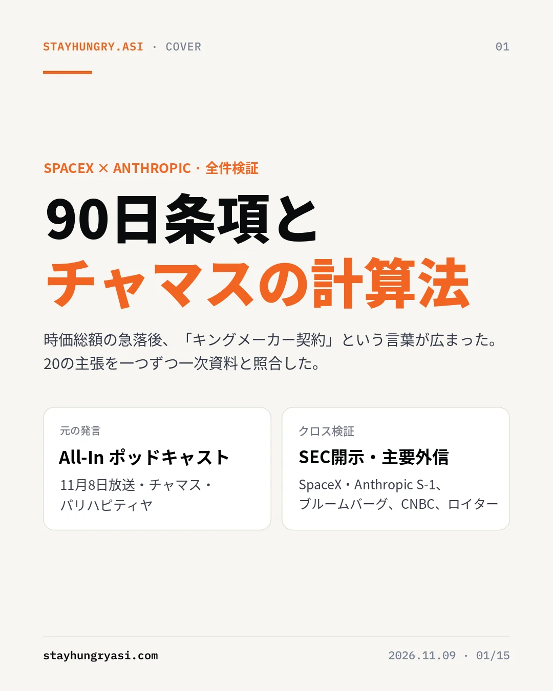
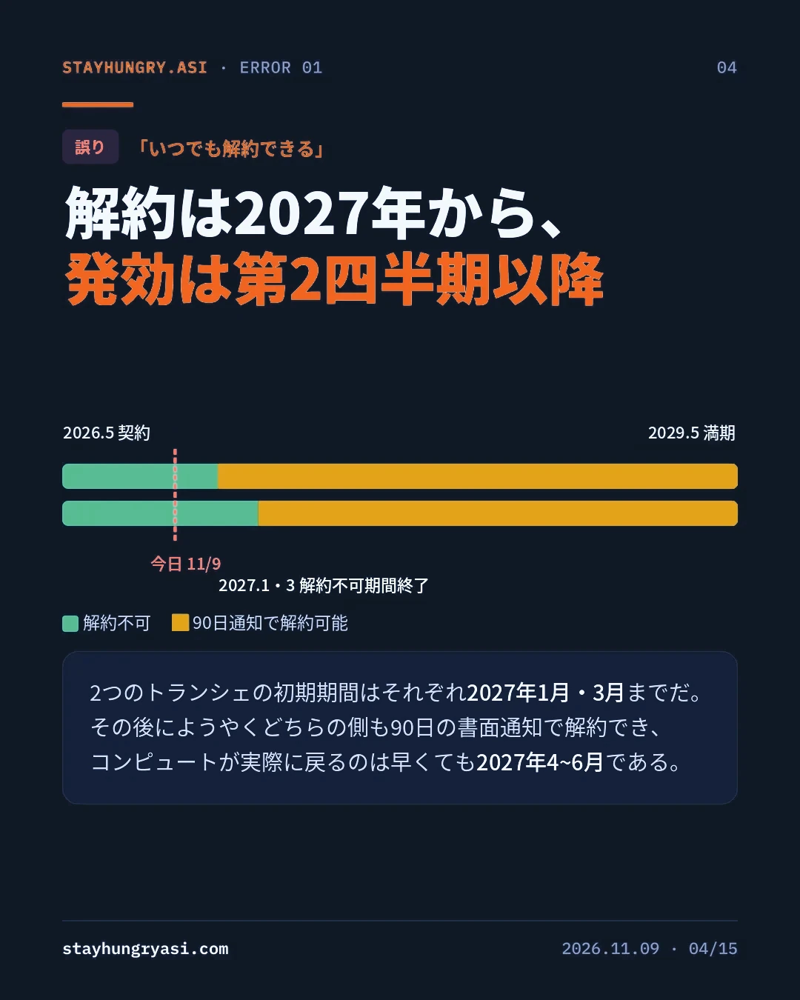
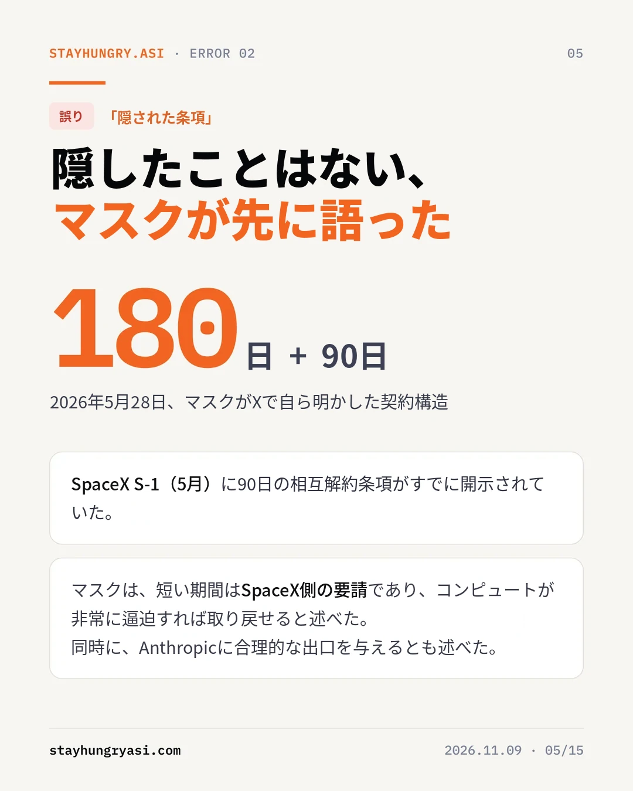
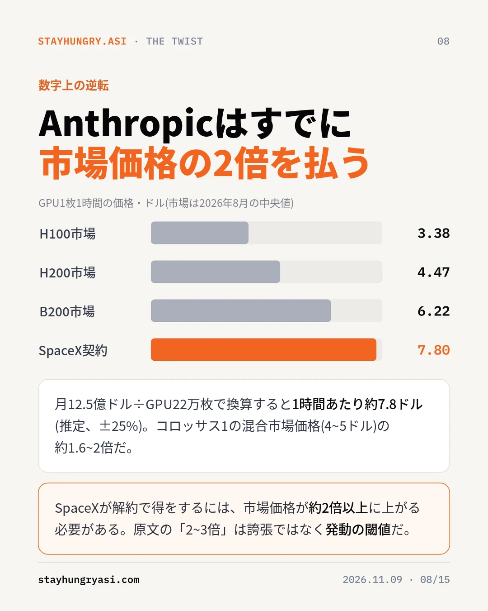
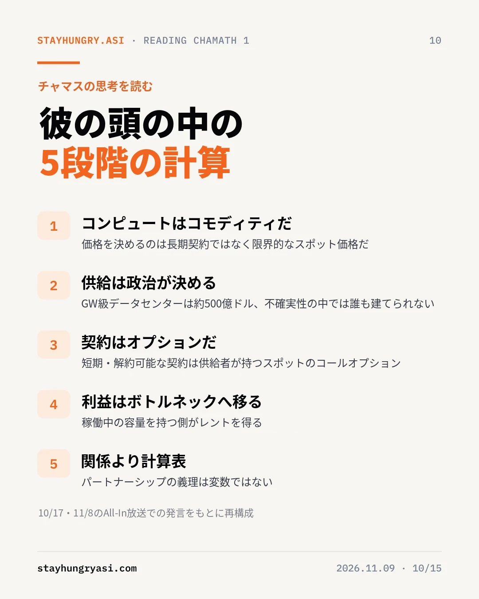
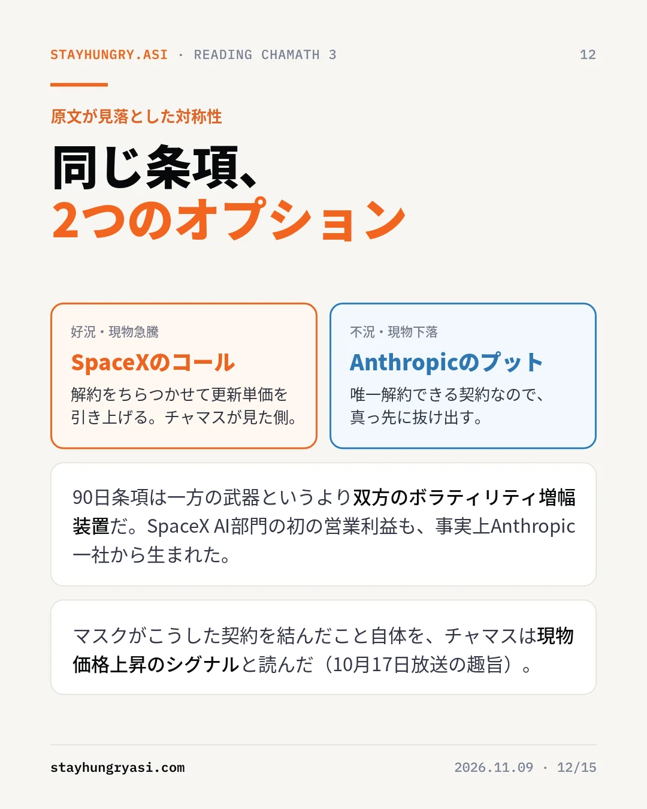
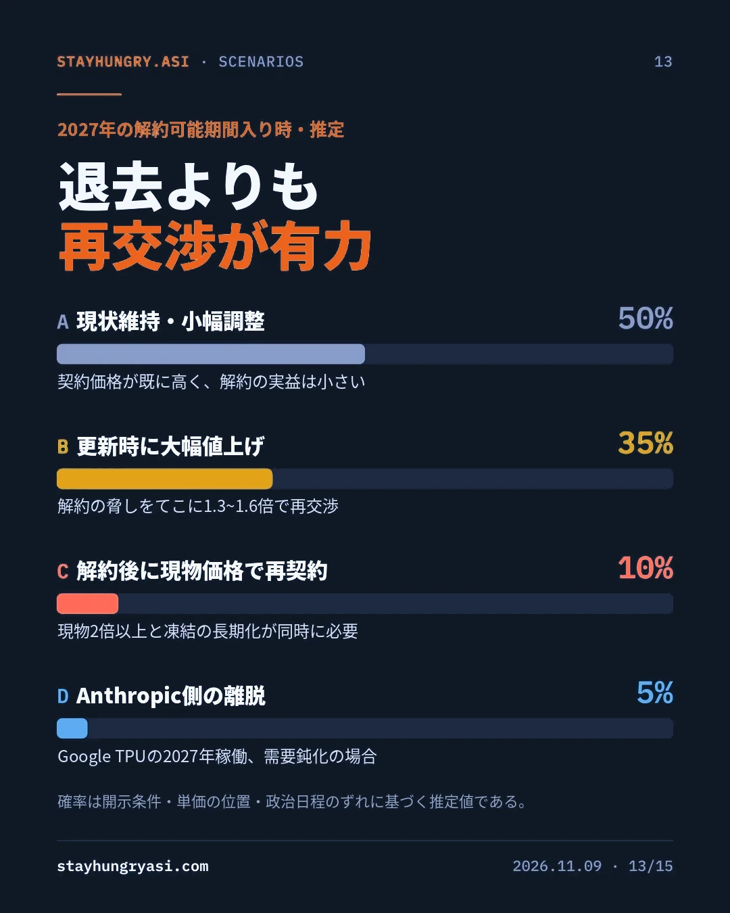
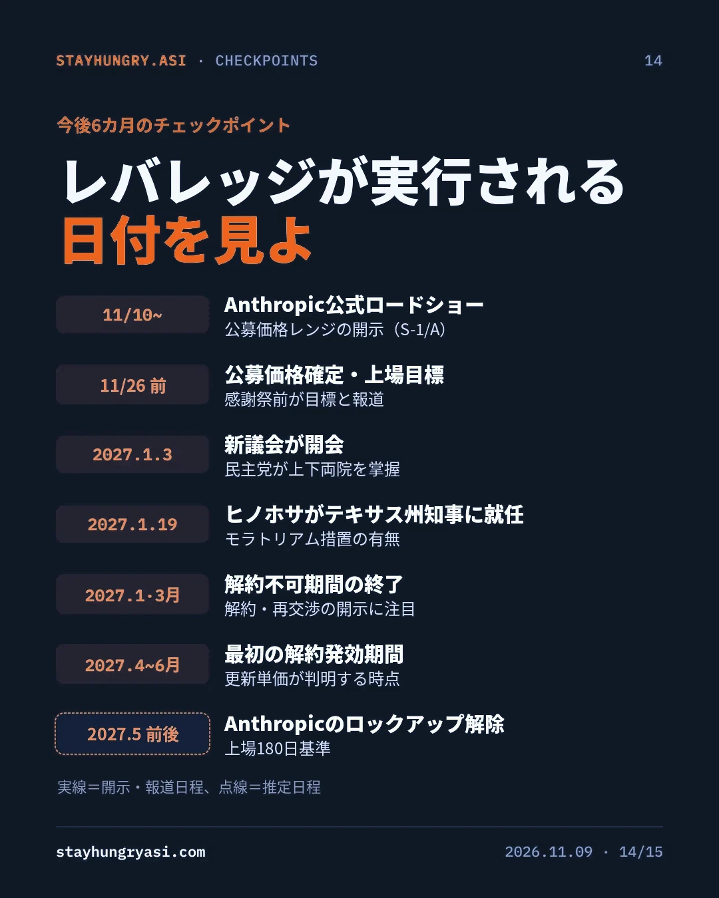

データ基準 2026年11月9日（韓国時間）· stayhungryasi.com
表記ルール：数値は出典に基づく事実である。「推定」は筆者の判断であり、シナリオ確率は筆者の主観的判断である。原文の主張20件を1次資料と照合して判定した。
利益相反の開示：このリサーチはAnthropicのAI（Claude）を使って作成しており、本文はAnthropicの契約と上場を扱う。投資勧誘ではない。
要点だけを15枚にまとめた。画像をクリックすると拡大できる。
検証対象は韓国国内で流通した韓国語記事である。元の発言はAll-Inポッドキャストの11月8日放送で、それを中国語で要約した記事がさらに韓国語に機械翻訳されたとみられる。本文に残る「各地」「hu槽歯」（歯を食いしばるという意味の中国語の慣用句で、最初の1字がハングルで表記されている）といった漢字表記がその痕跡である。
原文から数字、人物、日付、契約条件、逸話を含む事実の主張20件を抽出し、SpaceXとAnthropicのSEC提出書類（S-1、S-1/A）、ブルームバーグ、ロイター、CNBC、FT、MarketWatchの報道と照合した。
| 段階 | 内容 | 確認された歪曲 |
|---|---|---|
| 原本 | All-Inポッドキャスト 11/8放送 | 発言自体は確認済み。「1日で4兆ドル消失」は番組上の表現で、集計値より大きい |
| 2次加工 | 中国語の要約記事（推定） | 解約不可期間の条件が欠落、開示済みの条項を「隠し条項」と記述 |
| 3次加工 | 韓国語翻訳版 | CEOのダリオ・アモデイを「Dalio」と表記、確認できないフィデリティのロードショーの逸話 |
20件の主張のうち、事実6件、部分的事実・誇張8件、誤り4件、確認不可2件と判定した。主張の骨格（発言の存在、相互解約条項、選挙結果）は事実だが、レバレッジの時期と条件を決める細部で誤りが出た。
| 原文の主張 | 判定 | 確認された事実 |
|---|---|---|
| 契約に双方向の90日解約条項がある | 事実 | SpaceXのS-1（2026年5月）とAnthropicのS-1（10月26日）に、90日前の書面通知による相互解約条項が開示されている |
| 「いつでも」解約できる | 誤り | 初期期間はトランシェごとに2027年1月・3月まで。その後に限り、どちらからでも90日前通知が可能 |
| 条項が「隠されている」 | 誤り | 5月のS-1で開示。マスクが5月28日にXで、180日の賃貸の後に90日の相互解約となる構造であり、短い期間はSpaceX側の要請だったと自ら明かした |
| CEOの「Dalio」が投資家に謝意を表明 | 誤り | AnthropicのCEOはダリオ・アモデイ。当該の逸話は報道で確認されない |
| この2日間のフィデリティでのロードショー | 誤り | SEC規定上、正式なロードショーは早くても11月10日。フィデリティは既存の保有機関 |
| 時価総額約4兆ドルが消失 | 誇張 | 11月5日の1日でS&P500が約2.9兆ドル（1日として史上最大）、ロイターは約3兆ドル、FTはウォール街全体で3.2兆ドル |
| IPO評価額が2兆→1.2兆ドルに削られた | 誇張 | 投資家が議論しているレンジは1.2~1.3兆ドル（一部は1.1兆ドル）。11月2日のS-1/Aの公募価格レンジは空欄 |
| ウォーターゲート以来最悪の敗北 | 誇張 | 1974年に匹敵する規模と報道。1974年の共和党の下院での損失は48議席、今回の民主党の伸びは最大40議席で、最終集計が必要 |
| テキサスが民主党に転じた | 事実 | 知事選でヒノホサが現職のアボットに勝利、上院選ではタラリコが当選 |
| 知事たちがデータセンターを敬遠 | 誇張 | 少なくとも29の自治体が禁止・制限案を可決し、賛成は1か所。多くは拘束力のない投票で、アボットは既に承認を停止していた |
| 現物価格は2~3倍もありうる | 確認不可 | 見通し。B200の現物価格は2026年3月以降、既に2倍以上に上昇した記録がある |
| 「関係ではなく計算表の問題」 | 事実 | 番組の要約に同じ趣旨の発言が収録されている |
全20件のうち主要な12件を収録した。判定基準：事実（1次資料と一致）、誇張（方向は合っているが数値・範囲が膨らんでいる）、誤り（資料と矛盾）、確認不可（見通し、または報道なし）。
原文はSpaceXが今すぐにでも契約を切れるかのように記述しているが、開示された条件は異なる。AnthropicはSpaceXAI契約で2029年までに最大1,205億ドルを支出することになっており、全容量が引き渡される2026年12月以降は月約31億ドルを支払う。両トランシェの初期期間が終わって初めて解約通知が可能になる。
今日解約通知が出ても、コンピュートが実際に回収されるのは2027年第2四半期である。それ以前の解約関連ニュースは、更新交渉を前にしたポジショニングと読むのが合理的だ。
1段階目の契約は月12.5億ドルで300MW以上、エヌビディアGPU 22万枚以上の規模だ。これを換算すると、GPU1枚あたり1時間約7.8ドル、GWあたり年約500億ドルになる（推定）。GWあたりの数値は、チャマスが10月17日の番組で言及したSpaceXの約500億ドル、CoreWeaveの約200億ドルと一致する。
Colossus 1はH100・H200・GB200の混在なので、比較基準となる市場の混合単価は4~5ドルと推定される。契約価格はその1.6~2倍であり、解約時の90日の空白と再賃貸の摩擦まで考慮すると、SpaceXが解約で得をするには市場価格が約2倍以上に上がる必要がある。原文の言う「現物2~3倍」は、誇張された数値というより、レバレッジが実際に発動する閾値である。
明示された5大契約約5,579億ドルのうち、SpaceXの比率は約22%である。GoogleとAmazonは相手方の重大な未是正違反を除いて解約できず、残りも解約不可の条件だ。したがってこの条項は、市場が冷え込んだときにAnthropicが真っ先に使える出口でもある。
| 範囲 | 11月5日の1日の損失 | 出典 |
|---|---|---|
| 原文の主張 | 約4兆ドル | All-In番組上の表現 |
| ウォール街全体 | 3.2兆ドル | FT |
| S&P500 | 約3兆ドル | ロイター |
| S&P500 | 約2.9兆ドル（1日として史上最大） | MarketWatch |
| ナスダック100 | 2.3兆ドル | ブルームバーグ |
| マグニフィセント7 | 1兆ドル | CNBC |
米国株式市場の1日の損失は2.9~3.2兆ドルである。4兆ドルに近づくのは、アジア市場まで加えた世界合計の場合に限られる（推定）。
チャマスの10月17日・11月8日の番組での発言をつなぎ合わせると、一貫した思考の構造が浮かび上がる。彼は技術よりも市場構造の変化を見ている。
| 思考の段階 | 内容 | 根拠となる発言（趣旨） |
|---|---|---|
| 1. コンピュートは原材料 | 価格は長期契約ではなく限界的な現物価格が決める | 固定契約と現物の格差が大きく、長期契約の供給者は200~300億ドルを取り逃している（10/17） |
| 2. 供給は政治が決める | 許認可の凍結が供給曲線を非弾力的にする | GW級のデータセンターは約500億ドル、不確実性の下では誰も投資できない（11/8） |
| 3. 契約はオプション | 短期・解約可能な契約は供給者が握る現物のコールオプション | マスクが90日で解約可能な契約を結んだという事実自体が現物上昇のシグナル（10/17） |
| 4. 利益はボトルネックへ移る | 稼働中の容量の保有者がレントを手にする | コンピュートの希少性がハイパースケーラーとSpaceXをキングメーカーにする（11/8） |
| 5. 関係より計算表 | パートナーシップは価格決定の変数ではない | 関係や企業の善悪とは無関係な純粋な経済の問題（11/8） |
クリステンセンの言う「魅力的な利益の保存の法則」で見ると、構造が鮮明になる。バリューチェーンのある層がありふれたものになると、利益は隣接する希少な層へ移る。AIインフラのボトルネックは、2023~24年のチップ（GPU不足）から2025年の電力（系統接続待ち）へ、2026年には許認可（住民投票と凍結）へと移った。いま最も希少なのは電力が接続され許認可が済んだ用地であり、それを既に持つ側が交渉力を握る。
| 時期 | ボトルネック | 様相 | 主な受益者 |
|---|---|---|---|
| 2023~24 | チップ | GPU不足 | チップ・HBM供給者 |
| 2025 | 電力 | 系統接続待ち | 電力機器・発電 |
| 2026~ | 許認可 | 住民投票・承認凍結 | 稼働中の容量の保有者 |
| 2028~（推定） | 軌道 | 地上規制を迂回する物語、探索段階 | まだ不確実 |
選挙直後にマスクが宇宙データセンターの魅力に言及したのも同じ流れである。ただしAnthropicとの軌道上コンピュートの協力は「関心表明」のレベルで開示されており、まだ判断の根拠とするには早い。
| 区分 | チャマスの論理の前提 | 検証結果 |
|---|---|---|
| 時期 | 供給が締まれば即座に行使可能 | 2027年第2四半期より前は実効不可。テキサスの新知事の就任も2027年1月19日 |
| 閾値 | 現物が上がれば既存契約は赤字 | 契約価格は既に市場の1.6~2倍。現物が約2倍は上がらないと解約の実益はない |
| 対称性 | 条項は家主の武器 | 同じ条項が不況時にはAnthropicのプットオプション。SpaceXのAI部門の初の営業利益も、事実上Anthropic一社から生じた |
| 項目 | SpaceX | Anthropic | 優位 |
|---|---|---|---|
| 代替の需要・供給元 | GoogleもColossusの容量に月9.2億ドルで契約、自社Grokの需要 | Google・Amazon・MSとの契約はあるが、望むだけの割り当てを受けられていないと開示 | SpaceX |
| 相手への依存度 | AI部門の利益の中核顧客 | 大規模な学習容量の短期的な移転は難しい | 相互 |
| 契約上の権利 | 2027年以降、90日前通知 | 同じ | 対称 |
| 単価の位置 | 既にプレミアムを受け取っている | プレミアムを支払っている | Anthropic |
| 開示・評判コスト | 上場企業の最大顧客の離脱、マスクによる「合理的な出口」の公約 | IPO中の供給リスクはディスカウント要因 | 互角 |
| 競合関係 | GrokとClaudeは競合モデル | 競合企業のインフラに依存 | SpaceX |
| 資金力 | 社債・株式による調達 | IPOで800億~1,000億ドルの調達が目標 | Anthropic（短期） |
構造的な優位はSpaceXにあるが、契約価格が既に高いため、実際の解約よりも更新時の値上げ交渉（B）が合理的な均衡と判断される。チャマスのシナリオ（C）は確率こそ低いが、起きればコンピュート価格全般が付け直される高インパクトの事象である。
第一に、地域の投票の多くは拘束力がなく、着工済みのパイプラインも残っているため、供給凍結の強度は予想より弱い可能性がある。第二に、Blackwellの供給拡大でH100のオンデマンド価格が1時間2ドル台半ばまで下がるなど現物が冷え込めば、解約オプションの価値はAnthropic側に移る。第三に、上場企業であるSpaceXにとって、最大顧客の離脱は売上の空白と開示負担を意味する。第四に、AnthropicはIPO資金と、2027年から稼働するGoogle・BroadcomのTPU容量によって代替経路を確保しつつある。
| 区分 | 内容 |
|---|---|
| 相対的な受益 | 既に稼働中の容量を持ち、短期契約の比率が高い保有者。凍結局面では既存設備の価値と更新交渉力が高まる |
| 混在 | チップ・メモリ。既存クラスターのアップグレード需要と新規GWの鈍化が相反する |
| スピードのリスク | 新規着工に連動する電力機器・データセンター開発。受注残が緩衝材になるが、テキサス・ジョージアの着工が遅れれば売上認識のペースが鈍る可能性がある |
| Anthropic IPO | 契約の約22%が解約可能な単一の供給元にかかっている点が、ロードショーの核心的な質問になる可能性 |
| 日程 | イベント | 確認ポイント |
|---|---|---|
| 11/10~ | Anthropicの正式ロードショー（早くても） | 公募価格レンジの開示（S-1/A） |
| 11/26以前 | 公募価格の確定・上場目標（報道） | コンピュート調達リスクのディスカウント幅 |
| 2027.1.3 | 新議会の開会 | AI・データセンター関連の立法の方向性 |
| 2027.1.19 | ヒノホサのテキサス州知事就任 | モラトリアム措置の有無 |
| 2027.1月・3月 | トランシェごとの解約不可期間終了 | 解約・再交渉通知の開示 |
| 2027.4~6月 | 最初の解約実効が可能な期間 | 更新単価 |
| 2027.5前後（推定） | Anthropicのロックアップ解除 | 上場180日を基準とした需給 |
SpaceXのS-1、AnthropicのS-1・S-1/A（SEC）、All-Inポッドキャスト（10/17、11/8放送）と以下の報道を照合した。契約単価の換算、市場の混合単価、シナリオ確率は筆者の推定である。
本資料は公開情報を検証・整理したリサーチであり、特定銘柄の売買を勧誘するものではない。stayhungryasi.com